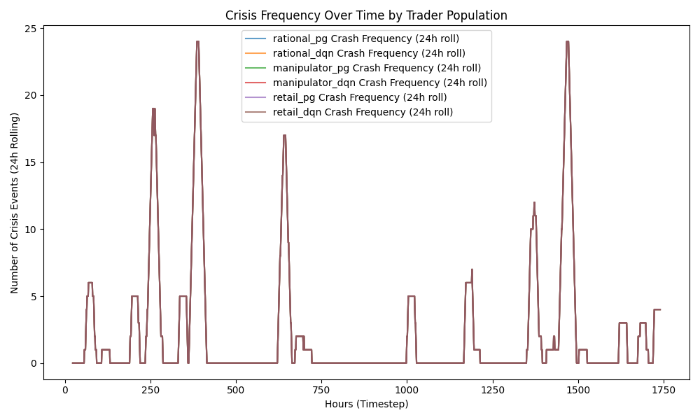
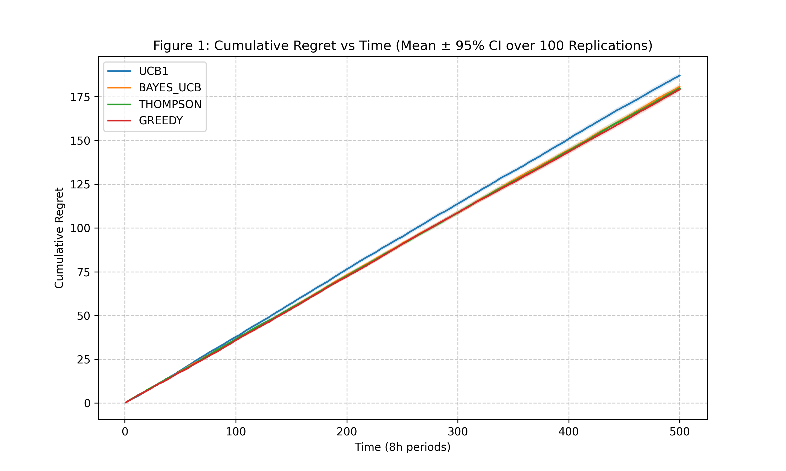

Slide 1 / Introduction
Reinforcement Learning for Crypto Market Stress
A three-assignment framework for modeling rational investors, strategic trader archetypes, and adaptive crypto asset selection.
Team: [Name 1], [Name 2], [Name 3]
Professional background: Cornell Tech students combining machine learning, finance, data engineering, and policy/regulatory analytics.
Core question: how do learning-based investors respond to steady markets, crashes, surges, and strategic manipulation?
RL Crypto ProjectApril 30, 2026
Slide 2 / End-User Benefits
Decision Support for Regulators and Asset Managers
For DOB-like regulators
- Stress-test crypto markets before real crises occur.
- Monitor turnover velocity, momentum herding, volatility spikes, and macro risk-off signals.
- Use SHAP explanations to identify which variables drive trader behavior.
For BlackRock-like asset managers
- Compare policies across steady, crash, and surge regimes.
- Quantify drawdown exposure, execution risk, and turnover costs.
- Allocate attention across assets with Bayesian bandit models.
End-user value: a surveillance and strategy-testing layer for adaptive crypto risk management.
BenefitsStress testing + explainability + allocation
Slide 3 / Data
Hourly Crypto, Macro, and Bandit Data
3
Main crypto assets: AAVE, ETC, SUI
~11.6k
Processed feature observations per main asset
8.1k / 1.7k / 1.7k
Approx. train / validation / test split per asset
Raw inputs
- AAVE: 17,248 rows; ETC: 17,247 rows; SUI: 17,248 rows.
- BTC: 17,250 rows; ES futures: 11,213 rows; Gold futures: 11,258 rows.
- Features include returns, 4h/24h momentum, 4h/24h volatility, 7d drawdown, cross-asset returns, macro returns, trading-hour flags, and time of day.
Assignment 4 bandits
- Arms: BTC, ETH, SOL, BNB, USDC.
- Reward: positive next 8-hour return.
- 100 replications; random contiguous windows with horizon T = 500.
- Prior: Beta(3,3) for each asset.
DataHourly observations aligned into model-ready features
Slide 4 / Methodology
From Single-Agent RL to Strategic Market Simulation
| Assignment | Methods |
|---|---|
| 2 | TD Q-learning and DQN for rational investor behavior under steady, crash, and surge regimes. |
| 3 | REINFORCE with baseline, DQN comparison, three trader archetypes, and SHAP explanations. |
| 4 | UCB1, Bayes-UCB, Thompson Sampling, and Greedy for Bayesian crypto asset selection. |
Trading environment
- Gymnasium environment with actions: sell, hold, buy.
- Position changes by 0.5; transaction cost is 5 bps per position change.
- Reward uses next-hour return scaled by rolling volatility to avoid leakage.
- Regimes are derived from 24h momentum percentiles.
- Trader rewards encode rational, manipulative, and retail-herding incentives.
MethodologyRL policies + explainability + Bayesian exploration
Slide 5 / Key Findings
Strategic Behavior Changes Market Risk


- Retail agents consistently relied on 24h momentum; manipulators emphasized short-term and turnover-linked signals.
- REINFORCE explored more smoothly; DQN adapted faster but often with sharper policy shifts and higher turnover.
- Assignment 2 was asset-specific: ETC favored DQN, while AAVE and SUI were less negative under TD in the test window.
- Greedy had the lowest bandit regret, 179.09, followed by Thompson Sampling, 179.84; UCB1 was highest, 187.06.
Regulatory takeaway: adapt surveillance when momentum herding and turnover spikes coincide with macro risk-off signals.
FindingsBehavioral incentives are observable and policy-relevant